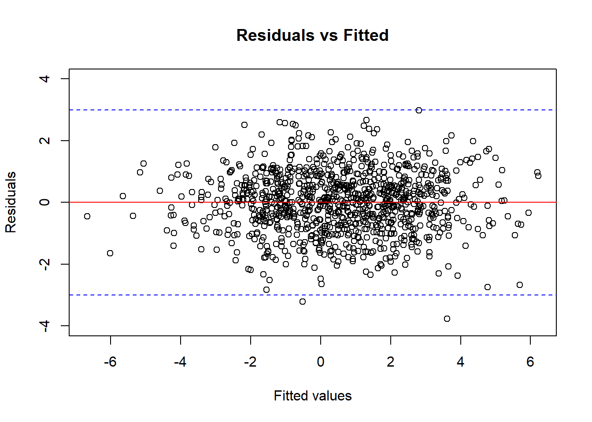
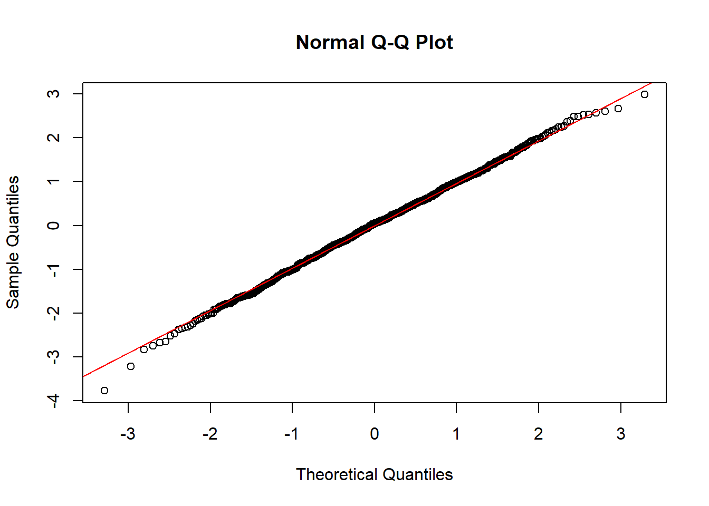

12 Linear Regression
In the last chapter, we have learned that correlation coefficients illustrates the linear relationship between two continuous variables. Suppose now we want to use one variable to predict another, how do we do that? In this chapter, we will learn the one of the most important statistical models: linear regression.
12.1 Simple Linear Regression
In Chapter 11, we have seen that if there is a linear association between two continuous variables, we can draw a trend line in between the data points. But how do we do find such a line? The answer is to conduct a linear regression.
12.1.1 The Model
Suppose we have two random variables \(X\) and \(Y\). Further suppose we are interested in \(Y\) and we want to use \(X\) to explain \(Y\). More specifically, we model \(Y\) by a straight line with respect to \(X\).
\[Y = \beta_0 + \beta_1 X + \epsilon\]
Here
\(Y\) is the response variable, which is model as a linear function of \(X\)
\(X\) is the explanatory variable
\(\beta_0\) is the intercept of the line
\(\beta_1\) is the slope of the line
\(\epsilon\) is a random error term and represents the unknown variation.
In this model, \(\beta_0\) and \(\beta_1\) are model/population parameters that are unknown and need to be estimated. This model is called a simple linear regression model.
Notes: You can think of the linear regression model as to decompose \(Y\) into two components:
One component that can be explained by \(X\). This component is captured by \(\beta_1 X\).
One component that cannot be explained by \(X\). This component is captured by \(\beta_0 + \epsilon\).
The value of this component can be due to any other explanatory variable else that we did not use in our model.
We suppose that this component has a mean \(\beta_0\) and the rest is just random errors \(\epsilon\) that corresponds to individual differences in responses \(Y\) among the population.
Example 12.1 Continue with the credit score context of Example 11.4, we are interested in credit score and we want to use income to explain credit score. Therefore, my response variable \(Y\) is credit score and my explanatory variable \(X\) is income.
With the simple linear regression model, I posit that credit score is a linear function of income. Moreover, credit score may not be determined entirely by income, but also transaction history, payment history, etc. that we do not have in our data. These constitutes errors in our linear regression model.
Notes: According to the model, \(X\) is also a linear function of \(Y\). However, \(Y\) is our variable of interest (response variable), in the sense that we want to predict \(Y\) if we are given \(X\). Therefore, we focus our attention on \(Y\), and \(Y\) is on the left hand side of the model equation.
- In Example 12.1, we want be able to predict credit score given some income (i.e., if we know someone’s income, we want to predict their credit score).
12.1.2 Fitting the Model to the Sample Data
As in any other statistical problems we have seen, we want to know about the population but we cannot afford to know about everything. We therefore need to collect a sample of size \(n\) that consists of observations \((X_i, Y_i)\).
Now, if the model \(Y = \beta_0 + \beta_1 X + \epsilon\) is true, then for each observation \((X_i, Y_i)\) in our data, we have
\[Y_i = \beta_0 + \beta_1 X_i + \epsilon_i\]
where
\(Y_i\) is the value of \(Y\) for individual \(i\).
\(X_i\) is the value of \(X\) for individual \(i\).
\(\epsilon_i\) is the unknown error of individual \(i\).
Example 12.2 In Example 12.1, \(Y_1\) is the credit score of the first person in our sample, \(X_1\) is the income of that person, and so on.
Now, we want to find the model/population parameters \(\beta_0\) and \(\beta_1\). What should be our best guesses (estimates) for the line between \(Y\) and \(X\) based on what we know from our data? It should be the line that is closest to the data points we collected!
12.1.3 The Least Squares Regression Line
The closest line to the data points is the line such that the total distance from the line to all the data points is the smallest. This is called the least squares regression line. Let’s find such a line step by step.
First, suppose \(\hat{\beta}_0\) and \(\hat{\beta}_1\) are the estimates of \(\beta_0\) and \(\beta_1\). The predicted value of \(y\) given \(X = x\) is
\[\hat{y} = \hat{\beta}_0 + \hat{\beta}_1 x\]
where
\(x\) represents the different values of \(X\)
\(\hat{y}\) represents the \(y\)-coordinate of the point on the regression line whose \(x\)-coordinate equals to \(x\).
Second, because our line may not be able to represent all the relationship between \(X\) and \(Y\), not all of the data points will lie on the line. Therefore, there will be some difference between (i) the value \(y_i\) that we observe from individual \(i\) in our data and (ii) the value \(\hat{y}_i\), which is the \(y\)-coordinate corresponding to \(x\)-coordinate \(x_i\) on the line:
\[e_i = y_i - \hat{y}_i = y_i - (\hat{\beta}_0 + \hat{\beta}_1 x_i)\]
These values \(e_i\) are called residuals/residual terms. They are the part of data that we didn’t capture using our simple linear regression model.
Notes: Recall that we use lowercase notation \(x_i, y_i\) for specific value that we obtained from individual \(i\) in our data. We use uppercase notation \(X_i, Y_i\) when we want to talk about the random variable version.
Figure 12.1: Regression line and residuals
Third, because we want to explain our data as best as we can (we want to find a line that is closest to the data points as possible), Hence, we need to minimize the sum of squared residuals \(\sum_{i=1}^n e_i^2\).
Fourth, with some mathematics, we can find appropriate formulas for \(\hat{\beta}_0\) and \(\hat{\beta}_1\) so that \(\sum_{i=1}^n e_i^2\) are minimized, and hence we have the line of best fit given by
\[\hat{\beta}_1 = \frac{s_{XY}}{s_X^2} = r_{XY}\times\frac{s_Y}{s_X} \hspace{5mm} \text{and} \hspace{5mm} \hat{\beta}_0 = \bar{y} - \hat{\beta}_1 \bar{x} \]
12.1.4 Interpretation
After finding the \(\hat{\beta}_0\) and \(\hat{\beta}_1\), we can interpret our result as follows:
\(\hat{\beta}_0\) is the estimated average response when \(X = 0\).
- This value may not be of interest depending on whether \(X = 0\) has any meaning or not.
\(\hat{\beta}_1\) is the estimated change in the average response for one unit increase in \(X\).
For any value \(x\) of \(X\) lying within the range of the observed values of the explanatory variable \(X\), we can predict the value of \(Y\) by referring to the corresponding point on the line
\[\hat{y} = \hat{\beta}_0 + \hat{\beta}_1 x\]
It is NOT recommended to predict outside the range of the observed values of \(X\). This practice is called extrapolation.
- The line of best fit comes about from the observed values and so it does the best job when looking within that range only. Once we move outside that range, it may result in very misleading estimates.
Example 12.3 Let’s continue with Example 11.7 about credit score and income.
Solve for the line of best fit
Interpret your intercept and slope
Use your model to predict credit score of a person who earns $\(60,000\) a year. Do you think this is a good estimate?
Solution:
- Previously, we found that
\[r_{XY} = 0.27928, \hspace{5mm} \bar{x} = 1.12, \hspace{5mm} \bar{y} = 708.9, \hspace{5mm} s_X = 0.215, \hspace{5mm} s_Y = 52.57\]
Hence we have
\[\hat{\beta}_1 = r_{XY} \times \frac{s_Y}{s_X} = 0.27928 \times \frac{52.57}{0.215} = 68.29\]
and
\[\hat{\beta}_0 = \bar{y} - \hat{\beta}_1 \bar{x} = 708.9 - (68.29 \times 1.12) = 632.42\]
So the line of best fit is given by
\[\hat{y} = 632.42 + 68.29 \times x\]
\(\hat{\beta}_0 = 632.42\) implies that for a person with $\(0\) income, the average credit score is \(632.42\).
\(\hat{\beta}_1 = 68.29\) implies that on average the credit score increases by \(68.32\) for every 1 unit increase in annual income.
- Our prediction is
\[\hat{y} = 632.42 + (68.29 \times 0.6) = 673.394\]
This estimate is likely not very accurate for two reasons
The data set used is already quite small leading to a model that is likely not very accurate.
The \(X\)-value being used is far smaller than the minimum value observed in the data set, i.e., we are trying to extrapolate. This is likely reducing the accuracy of the prediction even more.
Example 12.4 Consider the problem of Example 11.8.
Solve for the line of best fit
Interpret your intercept and slope
Solution:
- Previously, we found that
\[r_{XY} = 0.75961, \hspace{5mm} \bar{x} = 118, \hspace{5mm} \bar{y} = 3.422, \hspace{5mm} s_X = 57.28874, \hspace{5mm} s_Y = 0.70317\]
Hence we have
\[\hat{\beta}_1 = r_{XY} \times \frac{s_Y}{s_X} = 0.75961 \times \frac{0.70317}{57.28874} = 0.0093\]
and
\[\hat{\beta}_0 = \bar{y} - \hat{\beta}_1 \bar{x} = 3.433 - (0.0093 \times 118) = 2.322\]
So the line of best fit is given by
\[\hat{y} = 2.322 + 0.0093 \times x\]
\(\hat{\beta}_0 = 632.42\) implies that on average the game will be completed in \(2.322\) hours when the total number of penalty yards is 0.
\(\hat{\beta}_1 = 0.0093\) implies that on average the time to complete the game increases by \(0.0093\) hour for every 1 unit increase in the total number of penalty yards.
Notes: The keys to this chapter are
knowing how to apply the formula to solve example/exercise problems;
understanding the difference between population parameters and sample statistics so as to choose the correct formula;
understanding the difference between the model (together with its parameters \(\beta_0, \beta_1\)) and the line of best fit (together with the estimators \(\hat{\beta}_0, \hat{\beta}_1\)).
12.2 Linear Regression Inference
So far, we have postulated a linear model (a linear relationship) between our response variable \(Y\) and and our explanatory variable \(X\):
\[Y = \beta_0 + \beta_1 X + \epsilon\]
where \(\beta_0\) and \(\beta_1\) are model (population) parameters. and we have tried to calculate a line of best fit based on the sample data \(\hat{\beta}_0\) and \(\hat{\beta}_1\). How can we go from something calculated from the sample as \(\hat{\beta}_0\) and \(\hat{\beta}_1\) to the true parameters \(\beta_0\) and \(\beta_1\)?
One way to do so is to assume a distribution of the random error \(\epsilon\).
12.2.1 Assumptions
In order to do statistical inference on the line of best fit, we make the so-called LINE assumptions:
L-inearity: Given the value of \(X\), the expected value of \(Y\) is a linear function of \(X\): \(\mathbb{E}(Y|X) = \beta_0 + \beta_1 X\).
- That is, on average, \(Y\) is a linear function of \(X\), or, on average, \(Y\) and \(X\) form a straight line/has a linear trend.
I-ndependence: The random error for each individual \(i\), i.e., \(\epsilon_i\) are independently distributed.
- We assume that the random error of one individual is independent of the random error of another individual in our population.
N-ormality: The random error for each individual \(\epsilon_i\) follows a normal distribution.
E-qual variance: The random error for each individual \(\epsilon_i\) has mean zero and homogeneous variance \(\sigma^2\).
- homogeneity: \(\sigma^2\) is the same for all individuals in the population.
Notes: The I-N-E assumptions can be summarized as: For each individual \(i\) in the population, the random error \(\epsilon_i\) are independently and identically distributed (iid) as a normal distribution of mean 0 and \(\sigma^2\). In short, the I-N-E assumptions assume: \(\epsilon_i \overset{iid}{\sim} N(0, \sigma^2)\).
12.2.2 Inference
When the above assumptions are met, we have the pivotal quantity:
\[T = \frac{\hat{\beta}_1 - \beta_1}{\mathrm{sd}(\hat{\beta}_1)}\sim t(n-2)\]
with
\[\mathrm{sd}(\hat{\beta}_1) = \frac{\hat{\sigma}}{\sqrt{SS_{XX}}} \hspace{5mm} \text{and} \hspace{5mm} \hat{\sigma} = \sqrt{\frac{SSE}{n-2}} = \sqrt{\frac{(y_i-\hat{y}_i)^2}{n-2}} = \sqrt{\frac{SS_{YY} - \hat{\beta}_1SP_{XY}}{n-2}}\]
where
\[\begin{align*} SS_{XX} & = \sum_{i=1}^n (x_i - \bar{x})^2 = (n-1)s_X^2 \\ SS_{YY} & = \sum_{i=1}^n (y_i - \bar{y})^2 = (n-1)s_Y^2 \\ SP_{XY} & = \sum_{i=1}^n (x_i - \bar{x})(y_i-\bar{y}) = (n-1)s_{xy} \end{align*}\]
Here, \(SSE\) is short for sum of squares of residuals, \(SS_{XX}\) is the sum of squares of \(X\) values, \(SS_{YY}\) is the sum of squares of \(Y\) values, and \(SP_{XY}\) the sum of product of \(X\) and \(Y\) values.
Now, with the pivotal quantity, we can calculate confidence intervals and conduct hypothesis tests for \(\beta_1\).
Example 12.5 Let us again consider Example 11.4: A new graduate is thinking ahead and wanting to better understand what goes into a good credit score. They manage to collect a random sample of annual income (in 100’s of thousands) and credit scores values for 10 people.
| Income (\(X\)) | Credit score (\(Y\)) |
|---|---|
| \(1.3\) | \(756\) |
| \(1.1\) | \(728\) |
| \(0.8\) | \(635\) |
| \(1.2\) | \(599\) |
| \(1.4\) | \(760\) |
| \(0.9\) | \(722\) |
| \(0.9\) | \(743\) |
| \(1.4\) | \(726\) |
| \(1.2\) | \(694\) |
| \(1.0\) | \(726\) |
Suppose that the LINE assumptions hold,
Test at a \(10\)% level of significance whether \(X\) is needed in the model? (i.e., whether the coefficient of “income” \(\beta_1\) is significantly different from 0)
Create a \(90\)% confidence interval for \(\beta_1\) and use your results to determine whether “income” is needed in the model explaining credit score.
Solution: Let us begin our calculation from beginning:
\[\begin{align*} \bar{x} & = \frac{1.3+1.1+0.8 + ... + 1.0}{10} = 1.12 \\ \bar{y} & = \frac{756 + 728 + 635 + ... + 726}{10} = 708.9 \\ SS_{XX} & = (1.3-1.12)^2 + (1.1-1.12)^2 + ... + (1.0-1.12)^2 = 0.416 \\ SS_{YY} & = (756 - 708.9)^2 + (728-708.9)^2 + ... + (726-708.9)^2 = 24874.9 \\ SP_{XY} & = (1.3-1.12)(756-708.9) + (1.1-1.12)(728-708.9) + ... + (1.0-1.12)(726-708.9) = 28.42 \\ \hat{\beta}_1 & = \frac{s_{XY}}{s_X^2} = \frac{SP_{XY}}{SS_{XX}} = \frac{28.42}{0.416} = 68.32 \\ \hat{\sigma} & = \sqrt{\frac{SS_{YY} - \hat{\beta}_1 SP_{XY}}{n-2}} = \sqrt{\frac{24874.9 - 68.32 \times 28.42}{10-2}} = 53.54 \end{align*}\]
- Hypothesis test:
Step 1: Hypotheses: \(\beta_1 = 0\) vs \(\beta_1 \ne 0\).
Step 2: Calculate the observed test statistic:
\[t = \frac{\hat{\beta}_1 - \beta_1}{\hat{\sigma}/\sqrt{SS_{XX}}} = \frac{68.32 - 0}{53.54/\sqrt{0.416}} = 0.8230\]
- Step 3: Calculate the critical value:
\[c = t_{1-\alpha/2, n-2} = t_{0.95, 8} = 1.8595\]
- Step 4: Because \(|t| < c\), we do not reject the null hypothesis at \(10\)% significance level and conclude that income does not need to be included in the model explaining credit score, i.e., the data does not provide sufficient evidence to suggest that income is associated with credit score.
- A \(90\)% confidence interval for \(\beta_1\) is
\[\Big(\hat{\beta}_1 \pm t_{1-\alpha/2, n-2}\times \mathrm{sd}(\hat{\beta}_1)\Big) = \Big(68.32 \pm 1.8595 \times \frac{53.54}{\sqrt{0.416}} \Big) = (-86.0376, 222.6776)\]
Therefore we are 90% confident that the true but unknown slope \(\beta_1\) lies between -86.0376 and 222.6776. This interval contains zero, therefore it suggests that zero is a possible value for \(\beta_1\) and so we do NOT reject the hypothesis in part a.
Exercise 12.1 Continue with Example 11.5: Many factors affect the length of a professional football game, for example the number of running plays versus the number of passing plays. A study was conducted to determine the relationship between the total number of penalty yards (\(X\)) and the time required to complete a game (\(Y\), in hours). The table below provides the data.
| Total (\(X\)) | Time to complete game (\(Y\)) |
|---|---|
| \(196\) | \(4.2\) |
| \(164\) | \(4.1\) |
| \(167\) | \(3.5\) |
| \(35\) | \(3.2\) |
| \(111\) | \(3.2\) |
| \(78\) | \(3.6\) |
| \(150\) | \(4.0\) |
| \(121\) | \(3.1\) |
| \(40\) | \(1.9\) |
Suppose that the LINE assumptions hold,
Test at a \(5\)% level of significance whether \(X\) is needed in the model? (i.e., whether the coefficient of “total number of penalty yards” \(\beta_1\) is significantly different from 0)
Create a \(95\)% confidence interval for \(\beta_1\) and use your results to determine whether “total number of penalty yards” is needed in the model explaining time to complete the game.
Notes: Here, we do not know \(\beta_1\), we use \(\hat{\beta}_1\), which is calculated from the data we collected, to make conclusions about \(\beta_1\). So the hypotheses in the above examples are to test whether the true parameter \(\beta_1\) is different from 0 or not, based on the \(\hat{\beta}_1\) value we obtained from the data.
12.3 Goodness of Fit of the Model
12.3.1 Residuals
Let’s move back a bit and rethink our model is \(Y = \beta_0 + \beta_1 X + \epsilon\). We assumed that it should be true for \(X\) and \(Y\) in general. That is, the model should be correct for all observations in the population.
So, if \((x_i, y_i)\) are observed values of \(Y\) and \(X\) for individual (observation) \(i\) in the data set we collected, \(y_i\) and \(x_i\) should also satisfy
\[y_i = \beta_0 + \beta_1 x_i + \epsilon_i\]
Notice here \(\beta_0\) and \(\beta_1\) are the same values as what we have in our general model (\(Y = \beta_0 + \beta_1 X + \epsilon\)).
Now, we know the numbers \((x_i, y_i)\) because they exist in our data set. However, we do not know \(\beta_0\) and \(\beta_1\) because they are model (population) parameters, i.e., they should be the same for all observed observations in our data set and all the unobserved observations in our population.
As a result, the error \(\epsilon_i\) is unknown, too. We do not know what is the true error (distance) from the model we suppose \(\beta_0 + \beta_1 x_i\) to the reality value \(y_i\). Now, if we estimate \(\beta_0\) and \(\beta_1\) by \(\hat{\beta}_0\) and \(\hat{\beta}_1\) respectively, we can estimate \(\epsilon_i\) by the residual \(e_i\)’s
\[e_i = y_i - (\hat{\beta}_0 + \hat{\beta}_1 x_i)\]
To know a line fit the data well, then our residuals should be small, more precisely: as small as possible! But we should only care about the value of the residuals, not their signs, i.e., we only care about how much we are incorrect, but we don’t care about whether we are overestimating or underestimating, because both are as bad. Therefore, we want the sum of squares of residuals to be small. The sum of squares of residuals is, as we learned from Section 12.2.2:
\[SSE = \sum_{i=1}^n e_i^2\]
12.3.2 Coefficient of Determination (\(R^2\))
The coefficient of determination (\(R^2\)) is given by the formula
\[R^2 = 1 - \frac{SSE}{SS_{YY}}\]
Recall that \(SS_{YY} = \sum_{i=1}^n (y_i - y)^2\), which is the total variation of \(Y\) in our data.
\(SSE\), the sum of squares of residuals \(e_i\)’s (which estimates the sum of random errors \(\epsilon_i\)), is the component in the variation of \(Y\) that is not explained by the linear model.
Therefore, the coefficient of determination (\(R^2\)) is the fraction of the variation in \(Y\) that is explained by the linear model.
For simple linear regression, i.e., for linear model \(Y = \beta_0 + \beta_1 X + \epsilon\), it can be proved that
\[R^2 = r_{XY}^2\]
Example 12.6 Interpret the \(R^2\) value from Example 12.5: credit score and income has \(r_{XY} = 0.28\) in the data given.
Solution: The correlation coefficient between credit score and income \(r_{XY}\) is equal to \(0.28\). Therefore the coefficient of determination for the linear regression of \(Y\) on \(X\) is \(r^2 = (0.28)^2 = 0.0784\). This implies that the simple linear regression model using income (\(X\)) as explanatory variable explains about \(7.84\%\) of the variation in credit score (\(Y\)). In short, the model explains \(\sim 7.84\%\) of the variation in \(Y\).
Notes: In the above example, \(7.84\%\) is a very low number. This suggests that income, on its own, is not a good factor to explain credit score.
12.3.3 Influential Points
An influential point is an observation that has a large influence on the statistical calculation of the model fitting.
In simple linear regression case, both the correlation coefficient \(r_{XY}\) and parameter estimates \(\hat{\beta}_0\) and \(\hat{\beta}_1\) are affected by influential points.
Under linear regression, such a point is identified as one, which, if we remove it from the data, our line of best fit will change markedly.
Notes:
Typically outliers in either \(X\) or \(Y\) direction (or both) are influential points.
- If such point exist, the analyst should make an effort to see if this is due to an error that occurred while collecting the data, or if there is some other interesting factors that affect this specific observations.
Usually, when we want to make conclusions about the majority of the data, we may choose to remove influential points from our analysis.
Example 12.7 Suppose in Example 12.5, there is actually another observation in the data set:
| Income (\(X\)) | Credit score (\(Y\)) |
|---|---|
| \(1.3\) | \(756\) |
| \(1.1\) | \(728\) |
| \(0.8\) | \(635\) |
| \(1.2\) | \(599\) |
| \(1.4\) | \(760\) |
| \(0.9\) | \(722\) |
| \(0.9\) | \(743\) |
| \(1.4\) | \(726\) |
| \(1.2\) | \(694\) |
| \(1.0\) | \(726\) |
| \(0.6\) | \(480\) |
The outlier in red has quite different values in \(X\) and \(Y\) compared to the rest of the data points.
Now, if we use the full data set above to calculate the line of best fit, we have
\[\hat{\beta}_0 = 466.6, \hspace{5mm} \hat{\beta}_1 = 206.4, \hspace{5mm} r_{XY} = 0.6237\]
When we remove the outlier, we have
\[\hat{\beta}_0 = 632.38, \hspace{5mm} \hat{\beta}_1 = 68.32, \hspace{5mm} r_{XY} = 0.2794\]
Observe how the numbers change when we include or exclude the outlier.
Notes: To detect influential points, one can calculate the Cook’s distance and see if the value is outstandingly large. In R, you can use the function cooks.distance() and identify points whose Cook’s distances are larger than \(4/(n-p-1)\) as influential points. Here, \(p\) is the number of independent variables in your linear regression. For simple linear regression, \(p = 1\).
12.3.4 Checking Assumptions
When we try to do inference from the model, i.e., to make conclusions about the model parameter \(\beta_1\), we need to make assumptions about the model.
The list of assumptions in Section 12.2.1 are all about the random errors \(\epsilon\).
L-inearity: \(\mathbb{E}(Y|X) = \beta_0 + \beta_1 X = \beta_0 + \beta_1 X\).
- If our model \(Y = \beta_0 + \beta_1 X + \epsilon\) is correct, this assumption is equivalent to the assumption that \(\mathbb{E}(\epsilon|X) = 0\).
I-ndependence: \(\epsilon_i\) are independent of \(\epsilon_j\), for all \(i\) and \(j\) in the population.
N-ormality and E-qual variance: \(\epsilon_i \sim N(0, \sigma^2)\) for individual \(i\) in the population
Again, we do not know the true errors \(\epsilon_i\) because we only have sample data instead of population data. We need to estimate the errors by the residuals \(e_i\). Therefore, we can try to check if our model satisfies the assumptions by checking the residuals.
There are essentially two plots that we can use:
The residuals vs. fitted plot:
This plots the residual \(e_i\) against the fitted value \(\hat{y}_i = \hat{\beta}_0 + \hat{\beta}_1 x_i\).
This is to check the L-inearity, I-independence, and E-qual variance assumptions.
The model will seem to satisfy the LIE assumptions if the points of the plot should look like a band of consistent size, scattering around the line 0, and there should be no pattern, as in Figure 12.2 below.
Figure 12.2: The residuals vs fitted plot of a model that satisfy the LIE assumption.
The QQplot:
As we learned from Chapter 10, we can use a QQ plot to check the assumption that certain data follows a normal distribution.
Therefore, we can check the N-ormality assumption of the linear regression model by plotting a QQplot for the residuals.
The model will seem to satisfy the N-assumption if the points on the QQ plot follows a straight diagonal line, as in Figure 12.3 below.
Figure 12.3: The QQ plot of a model that satisfy the N-assumption.
Notes:
Usually, the normality assumption (for both ANOVA or linear regression) can be compromised if we have a large data set (hundreds or more observations). That is when the Central Limit Theorem kicks in.
When the residuals vs fitted plot shows a pattern, we may need other techniques such as transforming the data. In this book, we will not cover this. If you are interested, try reading the Box-Cox transformation.
12.4 Predicted Value
As now we have the fitted model, i.e., the line of best fit \(y = \hat{\beta}_0 + \hat{\beta}_1 x\), we can predict \(y\) if we know a value of \(x\).
A prediction for a value \(x = x_0\) is \[\hat{y}_0 = \hat{\beta}_0 + \hat{\beta}_1 x_0\]
Example 12.8 Continue with Example 12.7 and the case where we use the full data. I can predict the credit score for someone who earns \(\$100,000\) a year using the fitted model:
\[\hat{y} = 466.6 + 206.4 \times 1 = 673. \]
Notes:
There are two types of uncertainty we have when we try to make a prediction from a fitted model
The random error \(\epsilon\) that comes from other factors we did not account for in our model.
The uncertainty that comes from the calculation of the model itself. Recall that the model is calculated from randomly selected samples, and the observations we have in our data set happens to be there by chance!
To construct confidence intervals for a predicted value, you will need to take another class in statistics. However, we can do this automatically in R with function
predict()settinginterval = "condience".
As mentioned in Section 12.1.4, do NOT predict (far) outside the range of the observed values of \(X\). This practice is called extrapolation and it can give misleading predictions.
- This is because, who knows what happens outside what we have seen? Maybe a nonlinear model?
12.5 Multiple Linear Regression
We mentioned in Example 12.6, income only explains \(\sim 7.84\%\) of the variation in credit score, which is very low.
In general, we can actually do a better job in explaining \(Y\) by adding not only one, but multiple explanatory variables:
\[Y = \beta_0 + \beta_1 X_1 + \beta_2 X_2 + ... + \beta_p X_p + \epsilon\]
In this model
We have \(p\) explanatory variables \(X_1, X_2, ..., X_p\).
- Usually we do not want these explanatory variables to be correlated (associated) with one another, we’d rather them be independent. Casually speaking, this is because we want our model to be meaningful and do not want to include many similar variables into one model. There are more technical reasons for this, too, but probably another book will explain this better.
Model fitting:
Since the model now has more explanatory variables, we need another formula for the coefficient estimates and that will not be covered in this book. However, we can calculate the estimates (and their standard deviations) automatically using statistical softwares like R.
The estimated coefficient \(\hat{\beta}_j\) for the \(j\)th explanatory variable can be interpreted in this way: keeping all other factors the same, one unit increase in the \(j\)th explanatory variable is associated with an average of \(\hat{\beta}_j\) increase in the response variable.
For categorical variables:
Statistical softwares R will treat categorical variables as follows. They will take one category as the baseline (=0), and then create one variable (yes/no or 1/0) for each of the additional category.
For example, in the student rent example, I can do a linear regression of falculty on income by first choosing Arts as my baseline, and then create another variable “isEngineering” which will give me 1 for students who go to Engineering major and 0 otherwise. And then I make another variable called “IsEnvironment”, and so forth
Interpretation: Now, suppose our estimated coefficient for “isEngineering” is \(\hat{\beta}_{\text{isEngineering}}\). We interpret this number as: a student in Engineering major will on average pays \(\hat{\beta}_{\text{isEngineering}}\) more on rent compared to a student in Arts major, keeping other variables fixed.
Model Inference:
To do statistical inference, i.e., using the data to make conclusions about the true population parameters \(\beta_1, \beta_2, ..., \beta_p\), we make the same LINE assumptions about the random errors \(\epsilon\).
Therefore, the model checking process is the same.
We still use the similar Wald-type tests as introduced in Section 12.2.2 with the estimated values and their standard deviation output from software. However, the degree of freedom of the \(t\)-distribution is now \(n - p - 1\).
The coefficient of determinant, \(R^2\) value, does not simply equal to the square of the correlation coefficient \(r^2\) anymore.
We can still get \(R^2\) value from the R output and interpret it the same way: \(R^2 \times 100\%\) of the variation of \(Y\) is explained by the model.
As we add more variables into the model, \(R^2\) will surely increase. However, we need to be very careful, or else we will do “overfitting”. That is, when we add too many variables, we are trying too hard to explain all the specific details of a sample, while losing our power to make a generalized conclusion about the population. Model selection is beyond the scope of this book.